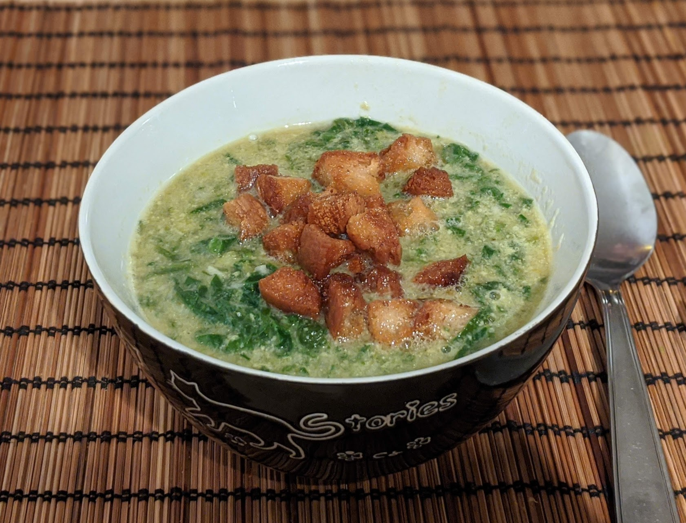

Soupe verte de Pâques

Pour 4 personnes :
- Deux carottes
- Deux branches de céleri
- Quatre poireaux
- Une grosse poignée d'épinards
- Une grosse poignée de côte de bettes
- Un gros bouquet d'oseille
- Un bouquet d'ail des ours
- Quelques feuilles de salade
- Un petit bouquet de ciboulette
- Un petit bouquet de persil
- Deux gousses d'ail
- Quatre échalotes
- Quatre tranches de pain, idéalement un peu durci
- 50g de beurre
- Deux jaunes d'oeuf
- Deux cuillères à soupe de crème liquide
- Sel, poivre, noix de muscade
- Couper les carottes, le céleri et les poireaux en morceaux grossiers. Les faire cuire dans deux litres d'eau pendant une demi-heure à partir des premiers bouillons.
- Pendant que ça cuit, laver et égoutter les légumes verts et les herbes, tout couper en lamelles fines. Éplucher et émincer les échalotes, éplucher et écraser l'ail. Réserver le tout ensemble.
- Passer les légumes cuits et leur eau dans un moulin à légumes à trous fins. Si on en n'a pas, on peut utiliser une passoire fine et presser les légumes contre la passoire pour récupérer du jus bien liquide.
- Mettre les légumes verts, l'ail et les échalotes dans le bouillon. Mélanger et garder au chaud à feu doux ; il ne faut pas que ça bouille.
- Pendant ce temps, couper le pain en cubes. Faire fondre le beurre dans une poêle, ajouter le pain jusqu'à ce qu'il soit bruni et durci.
- Battre les jaunes d'oeuf avec la crème liquide, du sel, du poivre et de la noix de muscade. Ajouter le tout dans la soupe pour l'épaissir un peu.
- Rectifier l'assaisonnement, servir chaud avec le pain bruni sur le dessus.
Retour à la liste des recettes